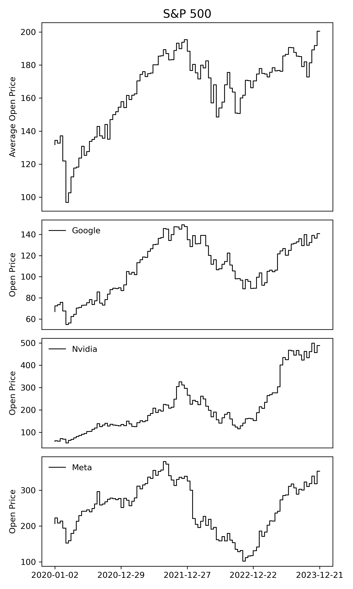
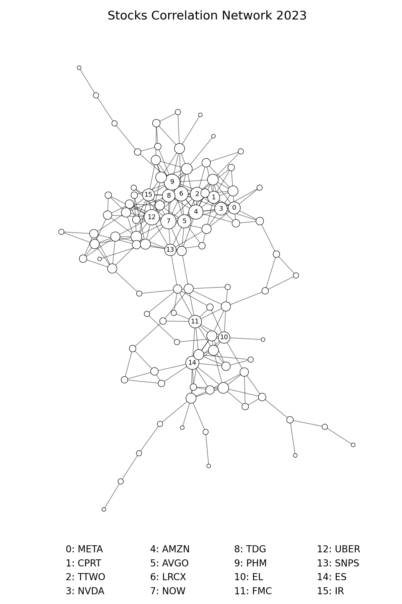
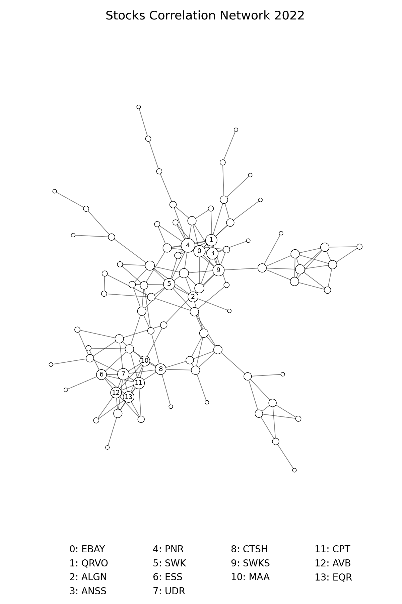

Creating a stocks correlation network
Understanding the stock market can feel like navigating a maze of numbers and graphs. In this blogpost we try to visualize stock market information a bit differently, using a method by [1]: stock networks built from correlation matrices.
Let us start with a simple visual journey through the stock market. We look at the average opening prices of S&P 500 stocks over a few years. This helps us see the big picture and spot trends over time. We also show a few example stocks that are part of the S&P 500 like Google, Nvidia, and Facebook to see how they have been performing individually.

Now, let us try to condense this information into a stock network. Imagine each stock as a dot (or node) on a graph, and lines (or edges) connecting them represent how closely their prices move together. We create this network using correlation data from a specific time window, for example, the year 2023. More specifically, we compare the timeseries of one stock with every other stock in the index and calculate the Pearson correlation coefficient. If the correlation between the two stock timeseries is higher than a specific threshold that we define, then we draw a connection between the two nodes in our network. It is like connecting the dots to see how stocks align with each other.

When we look at our stock network, we see clusters of closely connected stocks. These clusters show us groups of stocks that tend to move in sync. Within these clusters, some stocks stand out. They are highly correlated with lots of other stocks, or put differently, exhibit a high node degree.

By comparing networks from different years, say 2022 and 2023, we can see how the market evolves over time. We might notice new clusters forming or changes in which stocks are the most influential. This can be interpreted as looking at before-and-after pictures to see how things have shifted. One benefit of this visualization is that we can calculate many interesting network metrics such as the clustering coefficient, the average shortest path length, or the degree assortativity coefficient, which offer a new way of analyzing and interpreting the stock market.
For example, while it seems logical to focus on stocks that move together, sometimes looking at the opposite, that is stocks that do not move together, can be just as revealing. These lesser correlated stocks can offer a clearer view of what is actually driving market ups and downs, free from clustered trends and feedback loops. Analyzing the fluctuations within those lesser correlated stocks can be used to better predict imminent market crashes [1, 2].